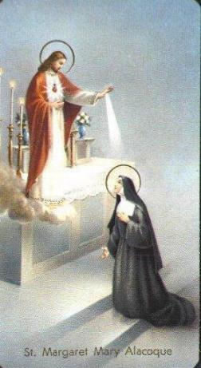
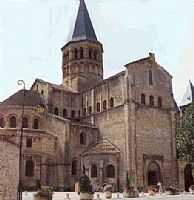
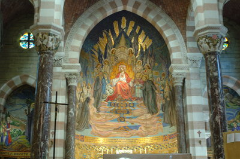
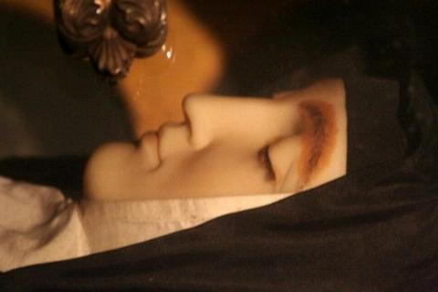
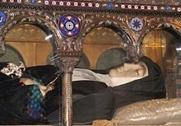
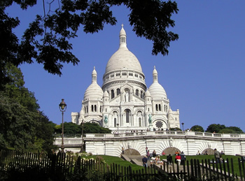
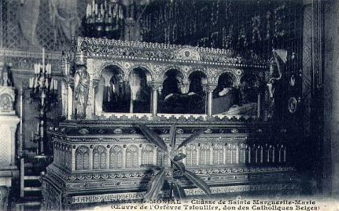

IRMàMARGARIDA MARIA ALACOQUE
Deixando o cargo de Diretora
Mestre das Noviças, Irmã Margarida foi novamente para o cargo de 
Um dos irmãos de Margarida, o sacerdote Jacques Alacoque, Pároco de Bois Sainte Marie, "contraiu uma doença tão grave, no final de 1686, que três médicos que o visitaram não deram esperanças de vida e o abandonaram". Crisóstomo, também seu irmão, em sua memória, escreveu este fato e acrescentou o pormenor, "que ele tinha a boca e os dentes tão apertados e fechados em consequência da doença, que para tomar uma colher de xarope, às vezes quebrava um dente e também a colher".
O mesmo Crisóstomo Alacoque era Prefeito perpétuo de Bois Sainte Marie. Ele contratou um mensageiro e o enviou durante a noite, para recomendar o pobre Padre a sua querida Irmã. O mensageiro chegou ao Mosteiro dizendo que o sacerdote estava muito mal, quase morto, o que ela respondeu que não acreditava. E, deixando o mensageiro, "foi rezar diante do SANTÍSSIMO SACRAMENTO durante algum tempo. Depois voltou com uma certeza absoluta, e disse ao mensageiro e escreveu um bilhete ao Crisóstomo, dizendo que ele não ia morrer". Isto verdadeiramente aconteceu, porque o irmão ficou totalmente curado em menos de oito dias, contra as expectativas pessimistas de todos.
O que tinha feito aquela alma angélica durante o curto tempo que deixou o mensageiro esperando? Ela foi conversar com JESUS Sacramentado, e pediu ao SAGRADO CORAÇÃO DE NOSSO SENHOR, para obter a cura da doença de seu irmão. NOSSO SENHOR respondeu: "Sim, vou conceder-lhe a cura, mas com esta condição que você ME ofereceu, porque EU gostaria de fazê-lo um santo, se ele quisesse corresponder aos Meus desígnios e as graças que LHE tenho concedido".
No início de 1687, ela avisou a seu irmão de tudo o que ela prometeu ao SENHOR em nome dele, pela sua cura. Com a autoridade de uma Santa, junto com a ternura de uma irmã e da humildade que é própria de uma freira, ela lhe deu o mais maravilhoso de todos os conselhos: "DEUS não pode ser ridicularizado". Ela escreveu e entrou em detalhes, assinalando tudo de errado que havia na vida dele e que precisava ser corrigido. Assim ela relacionou: "apego às coisas terrenas, amor ao jogo, a falta de prontidáo no cumprimento dos deveres e obrigações, a falta de perseverança de caráter, etc". E disse mais: "Eu espero tudo do SAGRADO CORAÇÃO DE NOSSO SENHOR JESUS CRISTO, o qual tem tanto carinho por você, que quer lhe tornar um Santo, ao preço que for, e é por isso que ELE deixa você ainda neste mundo. Foi ELE Quem lhe enviou a doença, para despertá-lo e fazê-lo sentir a realidade da vida. Ah! O que eu lamento, se você estragar os planos do SAGRADO CORAÇÃO, não fazendo aquilo que ELE quer de você. Para lhe dizer a verdade, você não vai encontrar paz e nem descanso em lugar nenhum, até ter sacrificado tudo a DEUS. Você vai sofrer, mas saiba que a graça Divina jamais lhe faltará, como também não faltarão à força e o alívio que lhe proporcionará o SAGRADO CORAÇÃO DE NOSSO SENHOR JESUS CRISTO".

Agora a estrada para o Céu também estava aberta para os seus dois irmãos, e a Santa teve o prazer de fazê-los conhecer e espalhar a Devoção ao SAGRADO CORAÇÃO DE JESUS. Na Paróquia de Bois Sainte Marie o Prefeito Crisóstomo se comprometeu a construir e decorar, com os seus próprios recursos financeiros, uma Capela dedicada ao SAGRADO CORAÇÃO na Igreja Paroquial. O Padre Jacques, que foi curado milagrosamente, instituiu na Igreja uma Santa Missa cantada solenemente em todas as primeiras sextas-feiras de cada mês, em honra do SAGRADO CORAÇÃO DE JESUS. À medida que todas estas notícias chegavam a seu conhecimento, Irmã Margarida se sentia tão feliz e repleta de consolações que escreveu ao seu irmão sacerdote: "Você não iria acreditar a alegria que me proporcionou por ter zelado pela glória do SAGRADO CORAÇÃO de nosso Divino Salvador. Isso é como eu penso uma das maneiras mais curtas para alcançar a santificação". E ao seu irmão Crisóstomo escreveu: "Você não pode falhar, terá que executar aquilo que propôs. Você me daré uma das maiores consolações que eu posso receber nesta vida mortal, porque nada poderá alegrar-me mais do que ver o amor, a honra e a glória deste DIVINO CORAÇÃO de meu SENHOR JESUS CRISTO."Todas as notícias que diziam respeito à Devoção ao SAGRADO CORAÇÃO DE JESUS levavam a alma de Margarida Maria inexprimíveis alegrias. Na correspondáncia dos éltimos anos de sua vida, sentimos acontecer um verdadeiro sopro de entusiasmo apostélico. Cada trabalho não lhe parecia doloroso para proporcionar as pessoas conhecerem o CORAÇÃO DE DEUS. É quase uma surpresa ver esta grande contemplativa tornar-se tão ativa.
A cidade de Dijon era um viveiro de apostolado, onde a glória do SAGRADO CORAÇÃO fazia maravilhas. A Irmã Jeanne Madeleine Joly recebeu a ordem de desenhar uma imagem do SAGRADO CORAÇÃO. Todavia, mesmo não sendo especialista no assunto, a sua mão inexperiente foi guiada por um imenso amor a JESUS, não para produzir uma obra artística, mas um piedoso trabalho, que Margarida Maria acolheu com simpatia e atenção. "Não posso expressar a minha gentil alegria em receber a imagem, que é como eu queria". O fato é que a pintura feita pela Irmã Joly quando foi apresentada a gráfica para ser editado, não teve nada a ser retocada, estava pronta para a impressão.
No dia 2 de Julho de 1688, diante do SANTÍSSIMO SACRAMENTO, a Irmã Margarida Maria viu

um lugar espaçoso em destaque, de admirável beleza. O CORAÇÃO DE JESUS brilhava no centro, como num trono de chamas. A VIRGEM MARIA estava de um lado, São Francisco de Sales e o Padre da Colombière do outro. As filhas da Visitação apareceram neste lugar, com os seus Anjos. A Rainha do Céu incentiva: "Vem, minhas bem amadas filhas, aproximem-se". E mostrando-lhes o DIVINO CORAÇÃO, NOSSA SENHORA disse: "Eis este precioso tesouro, que lhes é particularmente manifestado pelo generoso amor que o Meu FILHO tem pelo Instituto de vocês, o qual ELE olha e adora "como sua querida criança", e por isto, ELE quer beneficiá-lo com a maior atenção. É necessário que não só vocês se enriqueçam com este tesouro, mas continuem a distribuí-lo sem limitações, procurando enriquecer todas as pessoas, outros Institutos e Organizações Religiosas, sem qualquer receio ou medo, porque cada vez mais elas terão riqueza espiritual, a medida que mais se aproximarem do CORAÇÃO DO SENHOR".Em seguida, voltando para o bom Padre da Colombière, esta MÃE de bondade lhe disse: - "Para você, fiel servo do meu Divino FILHO, você tem uma grande parte neste precioso tesouro, porque ele é dado às filhas da Visitação para conhecê-lo e distribuir para os outros. É também reservado aos Padres da sua Organização Religiosa para ver, conhecer a utilidade e o valor da Devoção e também divulgá-la intensamente para o mundo".
O painel do SAGRADO CORAÇÃO, que devia ornar o novo edifício, foi executado com desvelo pela Madre de Saumaise, baseado na miniatura enviada pela Madre Greyfié. O quadro deixou satisfeita a sua ex-filha, que lhe escreveu: "Não posso lhe expressar o agradável momento de alegria que o meu coração sentiu a vista do painel, que não vou me cansar de olhar, porque achei que ficou muito bonito".
Houve a inauguração do pequeno altar, depois de ter sido feita a solene bênção. Ela foi realizada no dia 7 de Setembro de 1688. Mas não foi apenas uma festa para o Mosteiro, a cidade inteira participou. Os Padres nascidos em Paray, mas que trabalhavam em outras áreas distantes e os sacerdotes das Paróquias vizinhas se reuniram na Igreja, e em seguida, formou-se uma imensa procissão que passou por diversos recintos do Convento, para chegar à Capela. Atrás deles, acompanhavam uma legião de fiéis, entusiasmados e cheios de fé. é uma hora da tarde começaram as orações da bênção e a cerimônia com muita música e devoção.
As pessoas, religiosos consagrados e leigos, queriam conversar com a Irmã Margarida. Diziam: "Queremos conversar com a nossa Santa".
A Irmã da Garde garantiu "que ela viu verias pessoas, padres e seculares, entrarem em contato com a Irmã Margarida, para falar sobre as dificuldades que atravessavam, e que ao sair, estavam consolados, confessando que ficaram encantados ouvindo a Serva de DEUS. Ela falava com tanta facilidade e eloquência sobre os mistérios de nossa fé, que o conteúdo do conselho nos parecia de origem sobrenatural".
CONSUMAÇÃO EM DEUS (MORTE)

A Santa começou a prever abertamente a sua morte. "Eu não viverei mais doente, porque eu não sofro nada, a nossa querida Madre muito tem cuidado de mim". Outra vez, ela disse ainda mais positivamente: "Eu morrerei seguramente neste ano, porque eu não sofro mais nada e não posso impedir os grandes frutos que o meu Divino Salvador pretende tirar de um livro de Devoção ao SAGRADO CORAÇÃO DE JESUS". Era o livro do Padre Croiset. A edição apareceu em 1691, contendo cento e seis páginas, com um resumo da vida da Serva de DEUS, expondo minuciosamente toda a obra religiosa realizada pelo SENHOR através de Margarida, contribuindo de maneira preponderante para divulgar a nova Devoção.Sentindo que o Esposo se aproximava, Irmã Margarida Maria quis se preparar para a vinda DELE através de um Retiro Espiritual de quarenta dias, e desfrutar interiormente um pouco da ansiedade de seu coração, que a fazia suspirar pelo encontro Divino. Ela começou este Retiro excepcional no dia de seu aniversário, quando completou 43 anos de idade, em 22 de julho de 1690, festa de Santa Madalena. Foi no SAGRADO CORAÇÃO DE JESUS que ela passou os quarenta dias de Retiro. "Eu tenho NELE toda a minha confiança, como sendo o único apoio de minha esperança".
Em face de sua enfermidade, foi proibida de participar da Vigélia e entrar no Retiro Espiritual Anual do Mosteiro no dia 8 de Outubro, inclusive porque estava de cama, e na realidade, ela estava há nove dias de sua morte. Foi chamado o médico Doutor Billet, que muito estimava a Irmã Margarida. Examinando sua cliente observou que o problema dela era causado pelo Amor Divino. Assim, depois de longa consulta o médico disse não ter um bom remédio para o caso dela. Desta vez ele não viu qualquer sintoma alarmante, e estava tão certo de seu diagnóstico "que fez uma aposta garantindo que ela voltaria a ficar bem outra vez".
Mas Margarida pediu e fez a Confissão Sacramental, porque a sua confiança, o seu amor e o desejo de logo ir para Deus a consumia.
Ela disse:"O médico garantiu que eu não ia morrer... Mas seria melhor que não fosse verdade. Porque, na realidade, eu estou convencida de minha morte, e por esta razão, desejo receber o Santo Viático" (a Sagrada Comunhão para os enfermos e idosos). Ela recebeu a Santa Comunhão com ardor seráfico, e tinha a plena convicção de que seria pela éltima vez. Aquele era o dia 16 de outubro.
A noite, que foi a éltima, Irmã Margarida Maria fez Vigélia com sua ex-noviça, Irmã Marie Nicole da Faige dás Claines (a quem carinhosamente chamava de pequeno Luis Gonzaga). Permaneceram juntas até as 8 horas da manhã do dia seguinte, oportunidade em que a Irmã Nicole testemunhou os seus transportes de amor a DEUS. Às vezes era algum versículo dos Salmos das Sagradas Escrituras, outras vezes eram orações espontâneas que a Santa sussurrava em seus ardentes impulsos...
DEUS misericórdia infinita,
carinhosamente zelava para que os éltimos momentos de sua escolhida, 
Oprimida pela febre, ela não pode ficar deitada. Levantou-se e se apoiou na cama para poder respirar. Entretanto, um pouco intranquila, disse: "Ai! Estou ardendo de febre, estou queimando, mas se fosse do Amor Divino, que consolação! Mas eu nunca soube amar perfeitamente o meu DEUS"! E, falando para as Irmãs que a rodeavam: "Pedi ao SENHOR para me perdoar e vocês procurem amá-LO de todo o coração, para reparar todas as vezes que eu não O amei. Que felicidade amar DEUS! Ah! Que felicidade! Ame-O com um amor puro, sobretudo, ame-O perfeitamente"!
Em meio a tal expectativa do Paraíso Divino, um medo atravessou a alma da Irmã Margarida, àquele de não permanecer oculta e sepultada em eterno esquecimento após sua morte. Então ela fez a sua Superiora prometer que seria destruída todos os seus pertences, aquele caderno escrito que estava no armário, assim como todas as cartas e anotações. A Superiora prometeu em silêncio. Existem promessas, como esta, que a glória de DEUS dispensa simplesmente. O Céu tinha velado para que a posteridade não fosse frustrada do tesouro de graças contidas naquele caderno. Hoje podemos admirar a verdade das palavras que o seu Soberano SENHOR lhe dirigia, embora esta alma perfeitamente humilde tentasse fugir da obediência de revelar tantos Divinos milagres do Amor de DEUS, operados em seu favor.
Disse NOSSO SENHOR: - "Continue a escrever, minha filha, prossegue. Não seria nem mais e nem menos por todas as suas repugnâncias. Mas é necessário que Minha Vontade seja cumprida. Escreva, pois, sem medo, seguindo tudo o que EU lhe ditei, prometendo espalhar a unção de Minha Graça a toda humanidade, a fim de que EU seja glorificado. Primeiro, EU quero isso de você, para fazer você ver que EU Me divirto, tornando inúteis quaisquer precauções que deixei você tomar, para esconder a profusão de graças que EU tive o prazer de lhe enviar para enriquecer essa pobre e miserável criatura como é você, que não deve jamais se esquecer desta realidade, para Me entregar continuas ações de graças".
"Em segundo lugar, venho lhe ensinar que você não deve se apropriar destas graças, não sendo avarenta para distribuí-la aos outros, porque EU quero usar o seu coração, como um canal para a difusão delas nas almas, de acordo com os Meus desígnios. Desse modo, muitas daquelas almas que estão no abismo da perdição seráo convertidas, como farei você ver na continuidade. E em terceiro lugar, é para fazer você ver que EU sou a verdade eterna que não pode mentir, Sou fiel às minhas promessas, e que, portanto, todas as graças que EU lhe tenho feito podem sofrer todos os tipos de exames e de testes, porque são absolutamente verdadeiras".

Com essas palavras, NOSSO SENHOR demonstra empenho em manter para a sua Igreja todos aqueles escritos dos Santos, que são jóias inestimáveis e constituem um verdadeiro tesouro espiritual.Às cinco horas da tarde do dia 17 de outubro, ela sentiu um grande tremor, pediu novamente o Santo Viático. O doutor persistiu dizendo que nada se apressasse e que era necessário esperar pelo dia seguinte.
A Madre se retirou, mas logo depois a enfermeira foi correndo chamá-la. Uma Irmã achou que não era necessário, mas a Irmã Margarida disse: "Deixe-a fazer, já é chegado o momento." Então, Margarida pediu a Superiora para lhe dar a extrema-unção. Fizeram vir o Padre imediatamente. A Superiora quis também fazer voltar o médico uma vez mais. Mas a Irmã Margarida Maria preveniu, dizendo: "Minha Madre, agora eu só tenho necessidade de DEUS e de me abismar no SAGRADO E MISERICORDIOSO CORAÇÃO DE JESUS".
Todas as freiras correram para a enfermaria. A Comunidade reunida rezava as orações de encomendação da alma.
A Irmã Rosalie Péronne de Farges e a Irmã Franãoise-Rosalie Verchère suas grandes amigas, ficaram uma de cada lado de seu leito no momento de sua morte. E junto delas, finalmente deu o éltimo suspiro. Irmã Margarida Maria morreu pronunciando o Santo Nome de JESUS, no mesmo momento em que o sacerdote também terminava as orações da quarta Unção dos Enfermos que ela recebeu.
Uma beleza toda sobrenatural derramou em sua face inanimada. Uma auréola já aparecida em volta de seu rosto. Os Anjos, os sócios Divinos de Margarida Maria, poderiam cantar ao redor de seu despojo mortal: "A humildade precede a glória". O Doutor Billet entrou quando a Irmã acabava de expirar. Ele estava totalmente surpreso. De acordo com a ciência, nada lhe tinha sido anunciado, que pudesse prever uma morte tão rápida, por isso, ele não duvidava de que o Amor de DEUS se incumbiu de levar Margarida para a eternidade no momento adequado.
Esta abenãoada morte aconteceu às 19 horas e 20 minutos da noite de terça-feira, dia 17 de Outubro de 1690. Na Comunidade, o luto foi geral.
Apenas a notícia da morte passou os portões do Mosteiro e logo se espalhou por toda a cidade. A tristeza tomou conta de todos e muita gente chorou como se tivesse perdido um parente muito próximo, ou como se tivesse ocorrido um terrível desastre público. Gritavam em altas vozes nas ruas: "A Santa está morta. Nossa Santa da Visitação Santa Maria está morta"! Repetiam as crianças com idade de quatro a cinco anos.
Na manhã seguinte, quando a Igreja foi aberta, ficou cheia com uma piedosa multidáo, ansiosa para contemplar ainda uma vez, a venerável Irmã, cujos restos mortais estavam expostos no coro das freiras. Todo mundo queria tocar no santo corpo e nos seus objetos, que se tornaram peças de devoção. Duas irmês estavam constantemente consolando as pessoas, mas não eram suficientes. Muita gente também queria relíquias da Irmã Margarida pedindo pedaços de sua roupa ou algo que ela escreveu. Mas o grande despojo desta verdadeira religiosa foi hermeticamente guardado e após a sua morte, ninguém encontrou nada que lhe pertencia, tudo foi cuidadosamente escondido.
O funeral se realizou na noite de 18 de Outubro. O corpo daquela alma eleita foi depositado na sepultura, embaixo do coro das freiras.
A confiança dos fiéis, em
sua intercessão foi verias vezes recompensadas pelos favores 
Em 1828, a Irmã Maria de Sales Chareault, professa do mosteiro de Paray Le Monial, foi curada de câncer no estômago. No dia 21 de Julho de 1830, um dia antes do reconhecimento legal do túmulo da Venerável Irmã Margarida, a Irmã Marie Thérèse Petit, foi curada de repente de um inveterado aneurisma no coração. Em 1841, a Irmã Louise Philippine Bollani, professa do Mosteiro da Visitação de Veneza, na Itália, alcanãou a cura instantânea e perfeita de uma terrível tuberculose pulmonar, considerada incurável pelos médicos. Estes três verdadeiros milagres foram reconhecidos por um decreto de 24 de Abril de 1864. Em 18 de Setembro do mesmo ano, o Papa Pio IX, proclamou Beata a Irmã Margarida Maria Alacoque.
Poucos meses depois, em Junho de 1865, em Paray Le Monial foi celebrada uma magnífica festa em honra da nova Beata. As notícias sobre novos milagres surgiam em todas as partes. Todavia para a Canonização, ou seja, para torná-la Santa, era necessário obter dois novos milagres perfeitamente constatados, e não só simples graças de cura. Das muitas que aconteceram, aquelas que foram escolhidas para serem apresentadas à consideração da Sagrada Congregação dos Ritos no Vaticano, remonta aos anos 1900 e 1903. Em 1900, a senhora Luise Agostina Coleschi, em Pompéia, na Itália, foi instantaneamente curada de uma meningio-mielite, e em 1903 a Condessa Antonietta Pavesi Astorri obteve do mesmo modo, pela intercessão da Bem-Aventurada Irmã Margarida Maria Alacoque, a cura e cicatrização instantânea de um doloroso e abominável câncer. Durante o debate, surgiram muitas dificuldades. Mais do que provavelmente fosse necessário, mas tudo por influência do demônio, sempre contrário à exaltação dos humildes. Entretanto, finalmente, a Providáncia Divina destruiu todos os truques e as maldades de satanás, em benefício da causa da Irmã Margarida. O Santo Padre Papa Bento XV no dia 6 de Janeiro de 1918, na festa da Epifania do SENHOR, no Palácio Apostélico do Vaticano, promulgou o diploma que aprovava os milagres. No dia 17 de Março, Domingo da Paixão, a causa da Irmã Margarida Maria Alacoque, a grande amante da cruz, foi concluída. Foi lido o decreto solene de sua Canonização.
Finalmente, o tempo marcado por Deus desde toda a eternidade havia chegado, quando, para alegria da Terra e do Céu, a discípula favorita do CORAÇÃO DE JESUS recebeu a auréola dos Santos. Em 13 de Maio de 1920, aconteceu a mais grandiosa cerimônia na presença de um extraordinário número de cardeais, bispos e arcebispo e de uma multidáo de fiéis de todos os países, principalmente da França. O Sumo Pontífice Bento XV disse solenemente SANTA Margarida Maria Alacoque. Em seguida, ele cantou o Te Deum, e todos os sinos de Roma anunciaram a canonização. Mas também era a festa da Ascensão do SENHOR. Sem dávida, a Providáncia Divina quis que aquela que sempre seguiu JESUS CRISTO no caminho do sofrimento e do Calverio fosse também associada de uma forma inefável a glória de seu triunfo no Céu. Que os humildes sejam exaltados! A suprema glorificação da Irmã Margarida Maria é a éltima cena das revelações de Paray Le Monial. E por todas essas razões, a Igreja com segura convicção e plena de amor, tem feito brilhar os raios que emolduram todo o esplendor da Devoção ao SAGRADO CORAÇÃO DE JESUS, fazendo com ela seja conhecida e possa ser praticada por todos os cristãos!
A Festa em homenagem e louvor ao SAGRADO CORAÇÃO DE JESUS, foi instituída por ELE Mesmo, no oitavo (8º) dia após a comemoração e celebração do CORPO DE CRISTO. Significa dizer, que a Igreja acolheu com muito prazer e alegria a Vontade Divina, inserindo-a no Calendário Litúrgico e realçando a dimensão incomensurável da Devoção, sendo realizada anualmente, na sexta-feira da semana seguinte a Festa de CORPUS CHRISTI, a jubilosa solenidade em honra do Misericordioso e SAGRADO CORAÇÃO DE JESUS.
Agora, na eternidade, Santa Margarida Maria Alacoque continua a sua missão, de estimular a humanidade a acolher e cultivar a Mensagem e a Devoção ao SAGRADO CORAÇÃO DE JESUS, convidando os fieis a conhecerem melhor e se dedicarem a um profundo, sincero e imenso amor ao CORAÇÃO MISERICORDIOSO DO SENHOR! Porque ELE sempre está aberto e tem um lugar para aquele filho que suplicando o perdáo Divino vai em busca da sua inefável e tão querida proteção! Para JESUS, honra, louvor e glória eternamente! Amém!
"HOMENAGEM"
Se espiritualmente estiver motivado(a), a proporcionar um profundo júbilo ao seu coração, convido-lhe ouvir a música CORAÇÃO SANTO. Desejando, clique abaixo na figura das Notas Musicais em movimento.